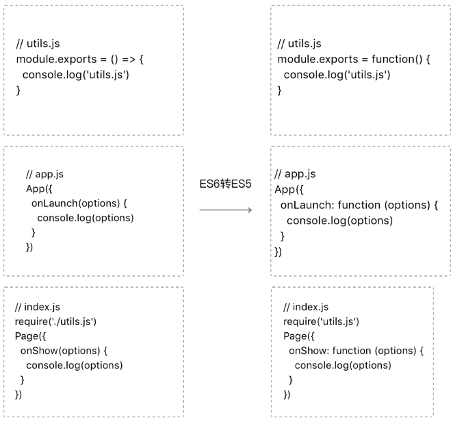

from developers.weixin.qq.com:
微信客户端在运行小程序的逻辑层的时候只需要加载一个JS文件（我们称为app-service.js），而小程序框架允许开发者将 JavaScript 代码写在不同的文件中，所以在代码上传之前，微信开发者工具会对开发者的JS 文件做一些预处理，包括ES6转ES5和代码压缩（开发者可以选择关闭预处理操作），在服务器编译过程将每个JS文件的内容分别包裹在define域中，再按一定的顺序合并成 app-service.js 。其中对于页面JS和app.js需要主动require。



图9-5 JavaScript的编译过程
最后一次编辑于 2019年08月19日 （未经腾讯允许，不得转载）